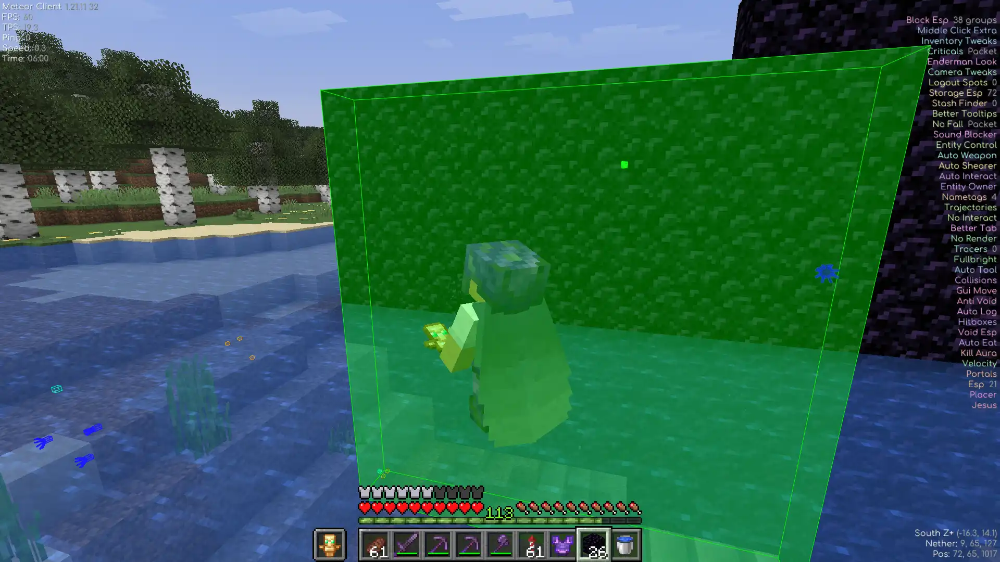
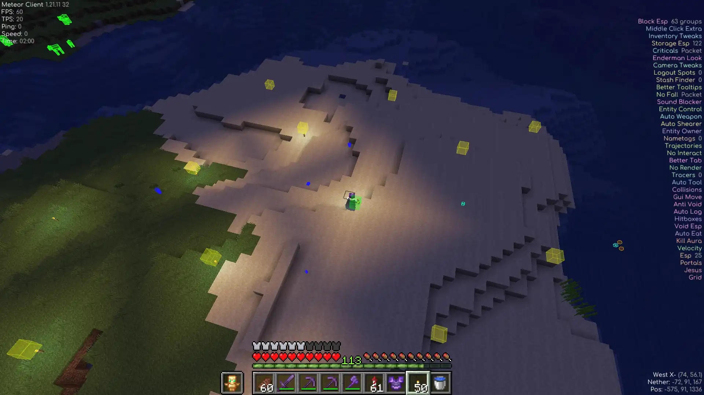
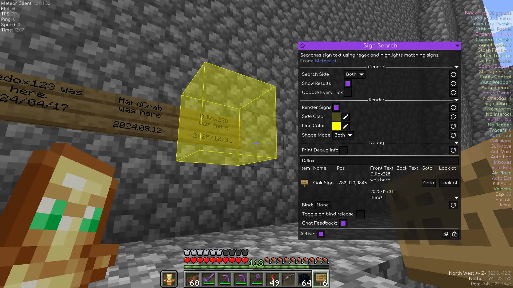
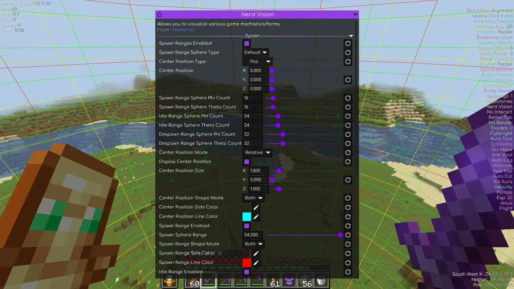
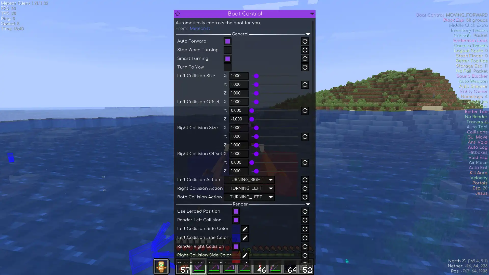
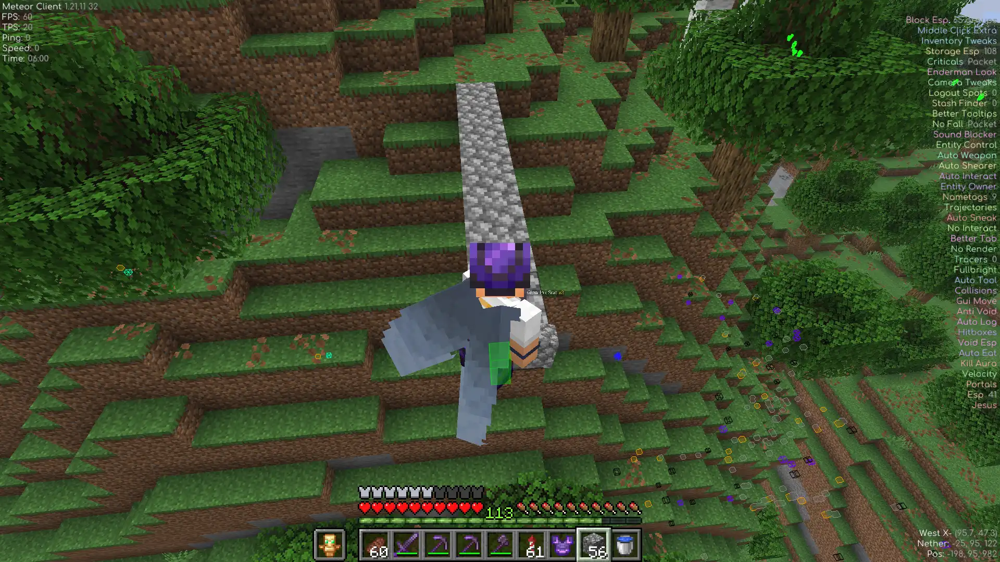

Combat that respects your aim
Z Kill Aura only attacks what your crosshair is already on. Z Aimbot weighs distance, angle and rotation limits before locking on. Z Auto Totem keeps a totem in your offhand.
A free toolbox for Meteor Client: modules, chat commands and HUD elements for combat, building, automation and visualization.
Older versions & full changelog history
Real screenshots, real modules. Click any shot to open it full-size.

Places blocks in range (exactly where you need them).

Snaps every block to a perfect grid.

Regex-searches nearby signs and highlights the matches.

Renders spawn ranges, spawner areas and other nerdy stuff.

Autopilot for boats.

Sneaks at block edges so you never walk off a ledge again.
Six reasons players install Meteorist.
Z Kill Aura only attacks what your crosshair is already on. Z Aimbot weighs distance, angle and rotation limits before locking on. Z Auto Totem keeps a totem in your offhand.
Placer puts blocks anywhere in range, Grid keeps spacing and alignment perfect, and Auto Mud turns dirt into mud.
Trade with villagers, craft items, sleep, open doors, ride boats and click inventory slots. All hands-free and configurable.
Nerd Vision renders mob spawn ranges, spawner areas and other stuff. Sign Search regex-scans every sign around you and highlights the matches.
Auto Heal, Auto Feed and Auto Repair react before you do. Auto Sneak catches you at every ledge, and Jumps gets you extra height.
Instructions runs command sequences with delays, cycles and Starscript support. Minescript Integration bridges Meteor with your custom scripts.
Meteorist is a regular Fabric mod. No installers, no configs, no accounts.
Install Fabric Loader and Meteor Client. Meteorist runs on top of Meteor, not instead of it.
Current build targets the latest Minecraft release. Need another version? Grab an older jar.
mods
Put meteorist-*.jar into your .minecraft/mods folder and launch the game.
Modules appear in the ClickGUI under the Meteorist category.
Every module with every setting generated from source on each release. Search, filter by category, click a card to open its settings. Press / to jump to search.
Nothing matches that search.
Type them in the Minecraft chat or bind them to keys. Click a card to copy the command.
Custom HUD elements for Meteor's Text HUD element. Click an element to browse its settings and HUD presets.
Release notes for the current build, pulled from GitHub.
Loading changelog...
Unedited words from players, linked back to the original Discord messages.
⭐⭐⭐⭐⭐/⭐⭐⭐⭐⭐
Very good addon - the features like ZKillaura, etc. are the best available in the market - and also are pretty good at avoiding AC detection.
I highly recommend downloading Meteorist because every single function actually helped me a lot while playing on different servers it's good literally for everything, for farming, building, surviving and especially for pvp, I ain't gonna lie, with Z Auto Totem, Z Kill Aura, Z Aim Bot you will win any fight you got into.
In conclusion it's a great addon which makes the game easier by far you definitely should try it!
Meteorist not only has stuff for pvp, but they also have tons of informational stuff to that ive not seen on other meteor addons or utility mods in general. A genuinely useful addon i could not imagine going without.
All reviews were handpicked from our Discord channel. Click a name to open the original message.
Hi! I'm Zgoly, the developer behind Meteorist.
It started with a few simple modules I made for myself and my friends to make anarchy servers more fun. Once I put the project on GitHub, other players found it, and it slowly grew into the big open-source toolbox it is today. Honestly, the best features still come directly from the community and ideas from players.
The code is completely open under the GPL-3.0 license (including this website), so feel free to make a pull request. If you have an idea for a new module, just open an issue or join our Discord. That is how most updates happen here!
Meteorist grows from community ideas because most modules here started as a suggestion or a bug report.
No, because it is an add-on for
Meteor Client, packaged as a
regular Fabric mod. You need to install Meteor first and then drop the Meteorist jar into your
mods folder alongside it.
Each jar targets one specific Minecraft version, which you can see right in the release tag. For
example,
... is built specifically for
.... Meteorist always follows Meteor Client releases, so the
current build matches the latest supported version. You can find older jars in the
Releases archive.
To use modules, open the Meteor ClickGUI and look for the
Meteorist category. To run commands, simply type them directly into the chat, like
.interact. For HUD presets, just add a regular Text element in the HUD
editor and paste the snippet, since the values update live via Starscript.
No, since both of them are completely optional. Baritone is only required if you use the Item Sucker module for pathfinding to items and back. Minescript is only needed if you want to use the Minescript Integration module. Everything else works out of the box.
Please do! You can open a suggestion on GitHub or talk about it in my Discord. A lot of existing features actually started out as community ideas.
You can open a bug report on GitHub. Please include your Minecraft version, the Meteor and Meteorist versions, and quick steps to reproduce the issue. If the mod crashed, make sure to attach the log file. For quick troubleshooting help, joining the Discord is usually your best bet.
The mod is free and always will be. If it saved your totem or just made your day, you can support development or simply star the repo. It really helps.
Other community projects that pair well with Meteorist and Meteor Client.
A list of Meteor Client Addons automatically scraped from GitHub. Designed to make discovering and downloading Meteor addons as seamless as possible.
Visit websiteModule for Meteor Client that continiously breaks and places work block of villager until it has desired trade.
GitHubAn addon for Meteor client that adds many blatant features.
GitHub🌠 Soothing pastel theme for Meteor Client.
GitHubYour download will start in a moment. Click here if it doesn't.
Quick install:
.minecraft/mods folder.
Optional: Baritone for Item Sucker · Minescript for Minescript Integration.